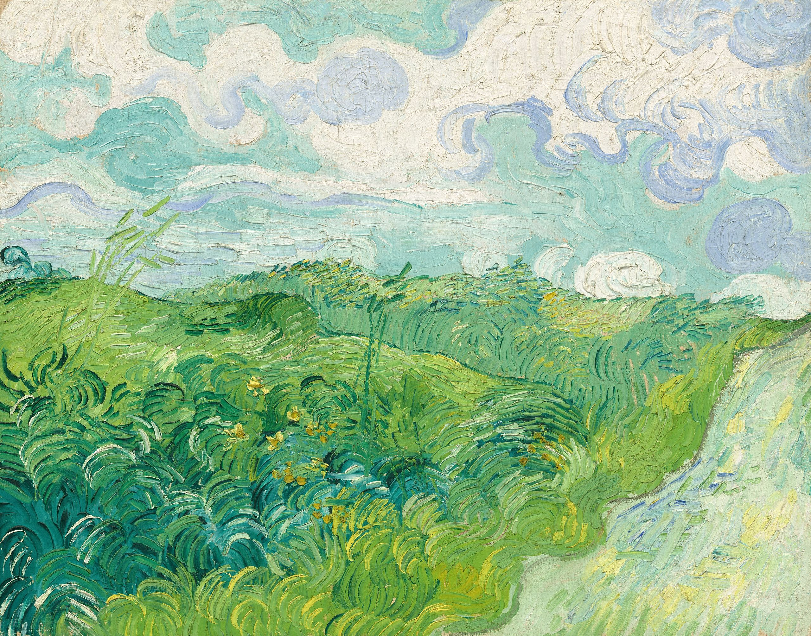
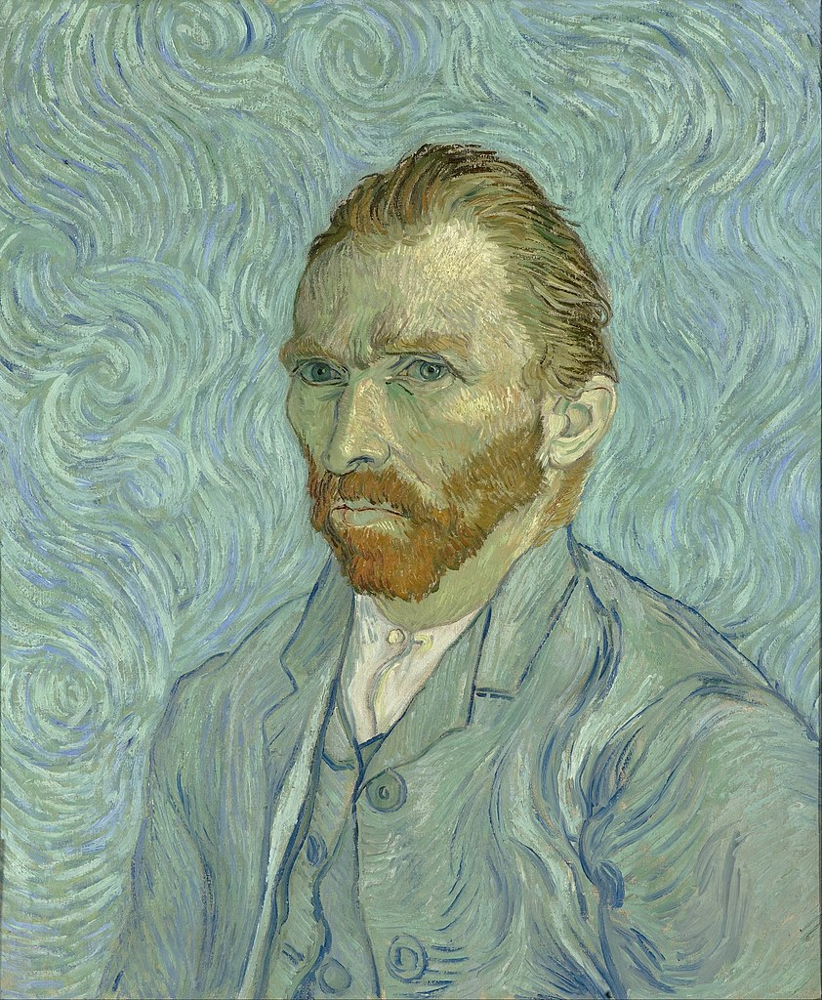
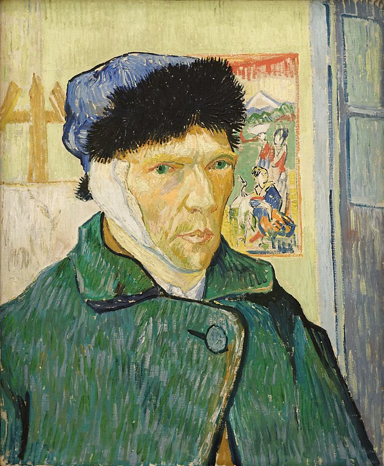

Vincent van Gogh
The earth without art is just 'eh'

Biography of Vincent
General Information
Vincent van Gogh, a Dutch post-impressionist painter born on March 30, 1853, is renowned for his vivid artworks that encapsulate emotional depth and artistic brilliance. Van Gogh's artistic career began late in his life, and despite enduring personal struggles, he produced a vast collection of breathtaking artworks. His distinctive style was characterized by bold colors, dramatic brushwork, and emotional depth, reflecting his profound inner experiences and emotions. He found solace in painting scenes of rural life, landscapes, portraits, and still lifes, each piece infused with his unique vision and emotional intensity.


Artistic Passion Amid Adversity
During his lifetime, his art received limited recognition, and he battled with mental health issues, including bouts of depression and anxiety.Despite these challenges, Van Gogh's dedication to his craft remained unwavering. His artistic genius blossomed in his later years, producing some of his most renowned works like "Starry Night," "Sunflowers," "The Bedroom," and numerous captivating self-portraits. Tragically, Vincent van Gogh's life was cut short when he passed away on July 29, 1890, at the age of 37, leaving behind an unparalleled legacy in the art world. His profound impact on art and his ability to convey raw emotion through his work continue to inspire and captivate audiences worldwide, solidifying his place as an icon of artistic brilliance and resilience.